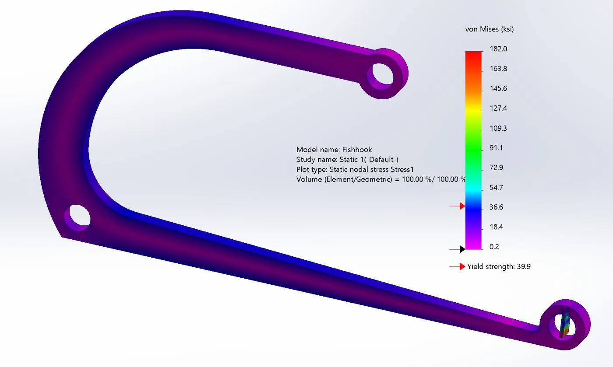
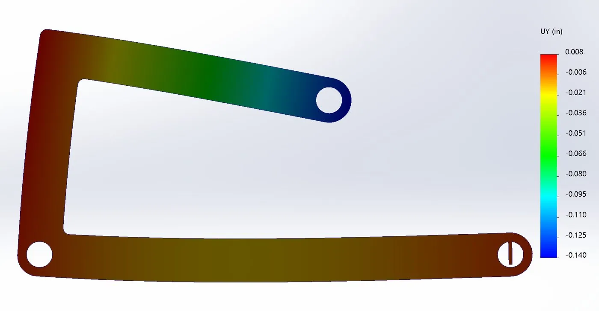
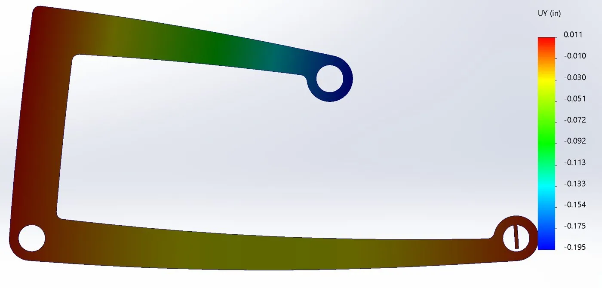
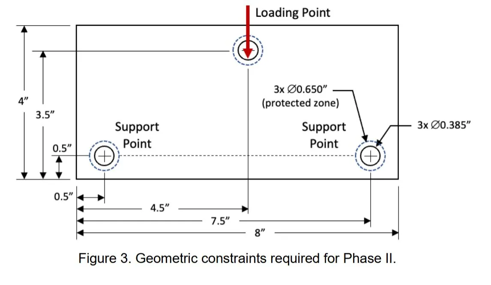
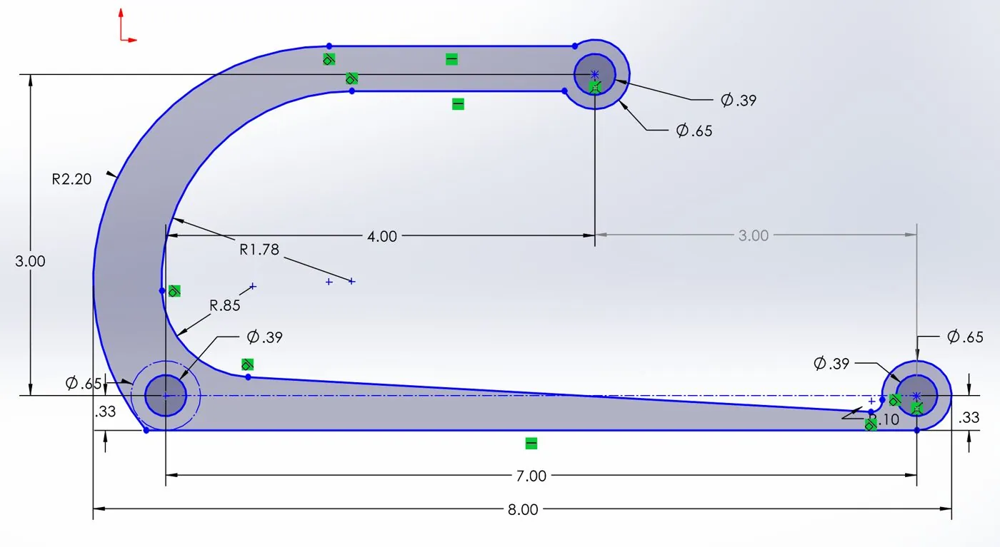
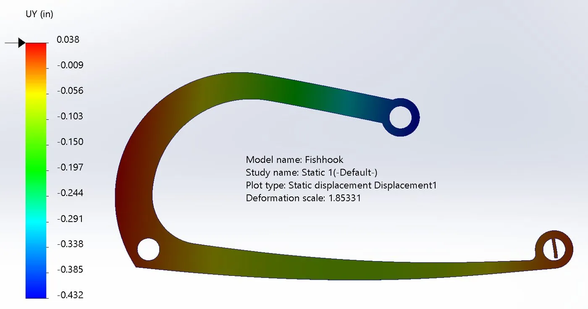
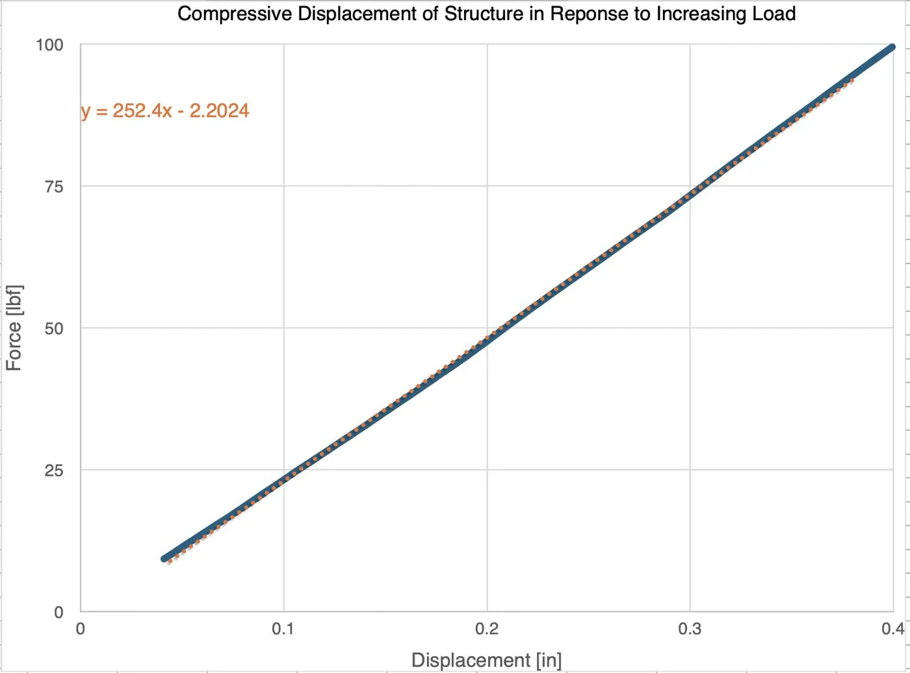
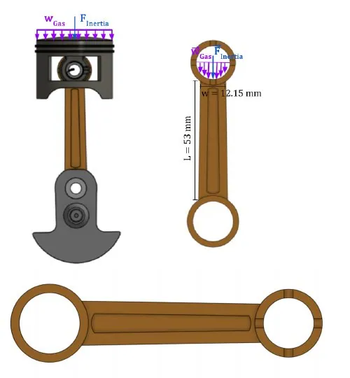

Design for Deflection: “The Fishhook”
ME 41 · Project 1 · with Marshall Searles
The challenge: design a part, waterjet-cut from ¼″ aluminum 6061, that fits a fixed envelope and deflects exactly 0.400″ under 100 lbf (a spring constant of 250 lbf/in) without yielding. Then test it on an Instron and compare to the model.

Phase I: Hand Calculations vs. FEA
Before designing anything, we checked that we could predict deflection by hand. For two given structures, a prismatic one and a tapered one, we found the reactions and broke each structure into three segments (OA, AB, BC). We wrote shear and moment equations for each, and applied Castigliano’s theorem, summing bending deflection in every segment plus axial compression in AB. Shear deflection was neglected. Then we compared against a SolidWorks static study.
For the prismatic case (0.25″ × 0.65″ section, aluminum 6061 with psi):


Phase II: Design for Deflection

Getting to the shape
Our starting point, the tapered Phase I structure, only deflected 0.24″. Every candidate after that was run as a static FEA at 100 lbf, then iso-clipped to show any region above yield and any point at or beyond 0.4″:
- Deeper tapers. These didn’t add enough deflection before the part started to yield.
- Cut-out holes. These reduced stiffness, but stress concentrated around the holes and went above yield.
- A “Σ” shape that replaced the vertical bar with two angled ones. It added bending, but over-stressed the corners.
- An inverted “U”. Far too stiff.
- Half a paper clip. It hit 0.4″ without yielding, but the arc left the allowed envelope.
Lengthening the arc above the apex and sharply shortening it below gave the final Fishhook. We made the beam thinnest where stress was lowest, near the bottom right support. We also narrowed the arm leading to the load point just enough to gain deflection without crossing yield.


Stress check
The plot peaks at 182 ksi, but almost all of that is on a modeling tab at the left fixture that doesn’t exist on the real part. Everywhere else, probing showed no region above 35.6 ksi, against the 35 ksi design limit (a conservative yield value that allows for fatigue, machining imperfections and temperature). The typical yield strength of 6061-T6 is about 39.9 ksi.
Mesh convergence
| Mesh | Max deflection | Max stress | Max element | Min element |
|---|---|---|---|---|
| 1 | −0.397 in | 35.6 ksi | 0.121 in | 0.040 in |
| 2 | −0.399 in | 35.7 ksi | 0.107 in | 0.036 in |
| 3 | −0.400 in | 35.8 ksi | 0.101 in | 0.034 in |
| 4 | −0.400 in | 35.8 ksi | 0.092 in | 0.031 in |
Below about a 0.101″ maximum and 0.034″ minimum element size, results stopped changing. Refining the mesh further only made the runs slower.
Testing

| Spec | FEA | Instron | Error | |
|---|---|---|---|---|
| Spring constant [lbf/in] | 250 | 250 | 252.4 | 0.96% |
| Weight [g] | n/a | 67.89 | 67 | 1.31% |
| Plate thickness [in] | 0.25 | 0.25 | 0.241 | 3.6% |
| Yielding | none | none | none | n/a |
The predicted mass came from the CAD face area × target thickness × density:
The cut plate came in thinner than specified (0.241″), which explains the slight over-deflection to 0.4013″. Working backward from the measured 67 g gives an effective thickness of 0.246″, so part of the gap may be measurement error. Either way, the FEA prediction and the physical test agreed to within 1%.
Also in ME 41: Chainsaw Control Rod Analysis

A second analysis modeled the connecting (control) rod of a small chainsaw engine. Combustion-gas pressure acts as a distributed load on the piston, and the piston’s inertia adds a force. Both are carried by the 53 mm rod between its small and big ends.